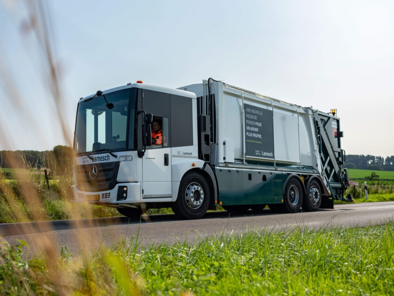

Pendant un été, j'ai eu l'opportunité enrichissante de travailler au sein d'une entreprise de nettoyage basée à Bettembourg, au Luxembourg, qui joue également un rôle crucial dans la gestion des déchets. Mon immersion au cœur de cette société m'a permis de découvrir les rouages du secteur du nettoyage industriel et de la responsabilité environnementale. Contribuer à maintenir des espaces propres tout en participant à des initiatives de gestion durable des déchets a été une expérience formatrice.

En qualité de technicienne de surface, j'ai assumé des responsabilités variées, assurant la propreté des locaux de l'entreprise, des espaces résidentiels et des entreprises privées. Mon rôle ne se limitait pas à l'entretien quotidien, mais englobait également des interventions spécialisées pour répondre aux besoins spécifiques de chaque environnement. Cette expérience m'a dotée de compétences pratiques, de rigueur et d'un sens aigu de l'efficacité, tout en me sensibilisant à l'importance d'un environnement propre et bien entretenu dans tous les secteurs d'activité.